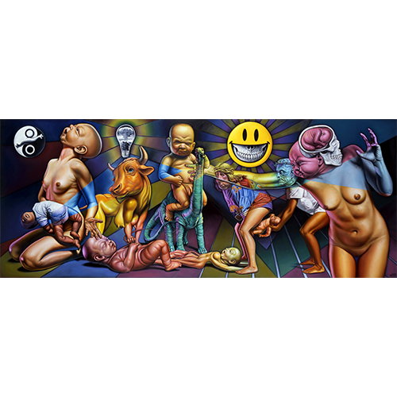

Exhibitions
Immortal Underground, Opera Gallery, New York, New York, US, November 12–December 2, 2009.
Ron English / Guernica, Allouche Gallery, New York, New York, US, September 22–October 19, 2016.
Reimagining “Guernica” / La réinvention du “Guernica”, Museo de la Paz de Gernika, Gernika-Lumo, Bizkaia, Spain, April 4–December 10, 2017.
Literature
Ron English, Death and the Eternal Forever (Korero Press, 2014), p. 153. ISBN 978-0957664920.
Ron English, Original Grin: The Art of Ron English (Paris: Cernunnos, 2019), p. 216. ISBN 978-2374950938.
Ron English, Status Factory: The Art of Ron English (San Francisco: Last Gasp of San Francisco, 2014), p. 8. ISBN 978-0867197891.
Notes
Reproduced in Allouche Gallery’s exhibition catalogue PDF for Ron English: Guernica, accessed April 5, 2026, https://www.allouchegallery.com/wp-content/uploads/2023/09/Ron-English-Guernica-Catalogue.pdf.
The work is documented in the Museo de la Paz de Gernika’s digital exhibition catalogue / flip-book, accessed April 5, 2026.
This work references Pablo Picasso’s Guernica.